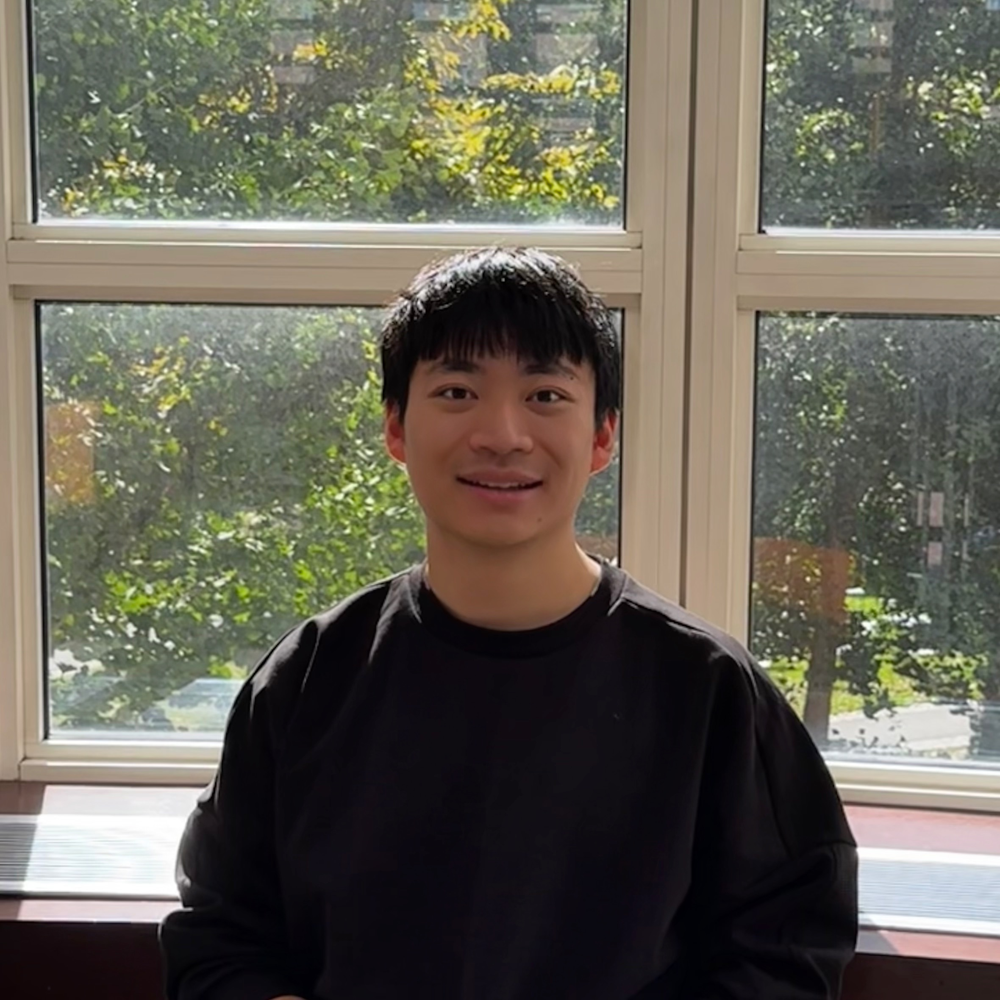

DRIFT: A Residual Flow Adapter for Decoding Continuous Outputs in Vision-Language Models
Preprint, 2026

I am an M.S. Robotics student at Carnegie Mellon University's Robotics Institute, advised by Prof. Fernando De la Torre.
My research focuses on vision-language learning and robotics. I am particularly interested in adapting pretrained foundation models to downstream tasks through post-training and improving agentic workflows.
I received my B.S. in Computer Science from the University of Wisconsin–Madison, where I was fortunate to be supervised by Prof. Yin Li. I began my undergraduate studies at Beijing Normal University and spent a year at UC Berkeley as an exchange student before transferring to UW–Madison.
* Equal contribution
Preprint, 2026
CoRL, 2026
Scientific Data, 2026
AAAI, 2025
Summer 2026
Research Assistant · Prof. Katerina Fragkiadaki
Developed agentic simulation pipelines for SkillWeaver and hierarchical robot policies combining VLM reasoning with VLA control.
Jan 2025 – May 2026
Research Assistant · Prof. Yin Li
Co-developed DRIFT for continuous robot control and visual grounding, and built a real-time ergonomic risk assessment system for General Motors.
Sep – Dec 2025
Machine Learning Engineer · Capstone Project
Built a multimodal presentation coach and deployed it on a Snapdragon NPU using ONNX.
May 2024 – May 2025
Research Assistant · Prof. Wenwu Zhu and Prof. Bing Xu
Worked on controllable video generation with Modular-Cam and nighttime-light data reconstruction with EVAL.
Nov 2024 – Jan 2025
Algorithm Intern
Fine-tuned text-to-video models and built data pipelines and parallel inference infrastructure.